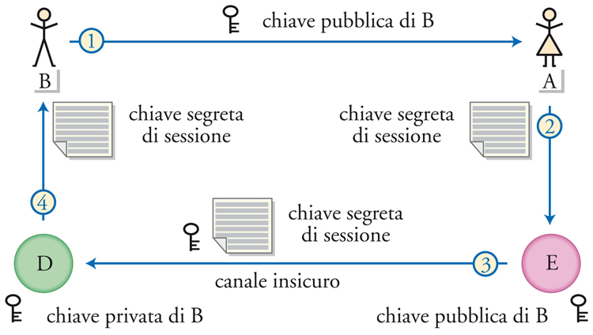
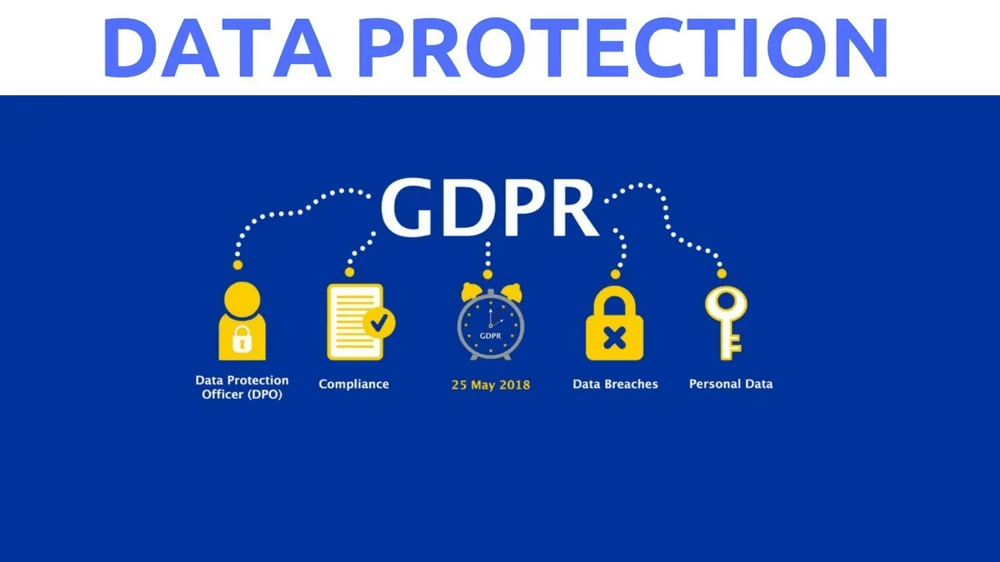
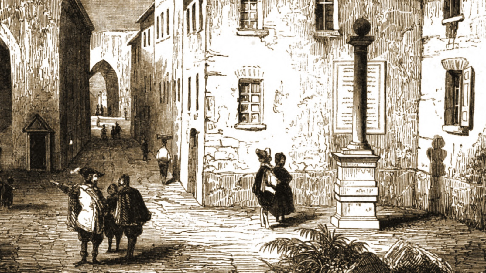
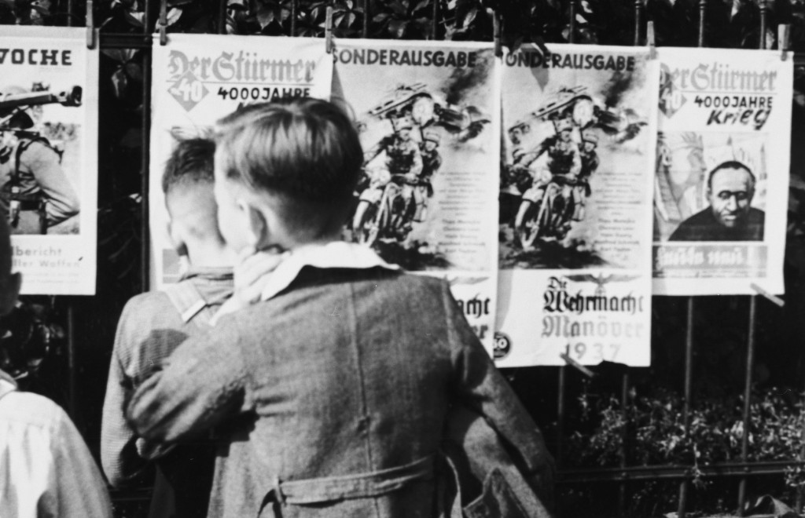

Argomenti UDA
Educazione Civica

CRITTOGRAFIA
La crittografia studia le tecniche per proteggere le informazioni trasformando un messaggio leggibile in un formato incomprensibile a chiunque non possieda la chiave per decifrarlo. Esistono due grandi approcci: nella crittografia a chiave simmetrica mittente e destinatario condividono la stessa chiave segreta, mentre in quella asimmetrica ogni soggetto possiede una coppia di chiavi pubblica e privata, garantendo confidenzialità, autenticazione e integrità. A queste si affianca l'hashing crittografico, che produce un riassunto univoco del messaggio per verificarne l'integrità, e la firma digitale, che dal 1997 ha valore giuridico equivalente alla firma autografa.

Data Breach e GDPR
Un data breach è una violazione della sicurezza che comporta la diffusione, la perdita o la modifica non autorizzata di dati personali, e può avvenire per cause accidentali, furto, infedeltà aziendale o accesso abusivo ai sistemi. Il GDPR, il regolamento europeo sulla protezione dei dati, impone obblighi precisi a chi tratta dati personali: in caso di violazione il titolare deve notificare l'autorità di controllo entro 72 ore, pena sanzioni fino a 20 milioni di euro. Prevenire un data breach richiede un approccio strutturato che parte dall'analisi del rischio e si concretizza in policy di sicurezza, crittografia, backup regolari e formazione continua del personale.

Manzoni e la Storia della Colonna Infame
Nella Storia della Colonna Infame Manzoni ricostruisce il processo del 1630 in cui due uomini furono accusati, torturati e giustiziati come untori della peste pur essendo innocenti. Manzoni non si limita a raccontare i fatti ma analizza il meccanismo che trasforma un'accusa infondata in condanna: la paura collettiva amplifica l'accusa, il bias di conferma spinge i giudici a cercare solo prove di colpevolezza, e la responsabilità si distribuisce tra chi accusa, chi condivide e chi tace. Quella struttura è identica alla dinamica della disinformazione virale di oggi, dove una foto sgranata su WhatsApp può distruggere la vita di una persona prima ancora che qualcuno pensi a verificare.

Propaganda e controllo dell'informazione nel Novecento
Nel Novecento i regimi totalitari svilupparono sistemi sofisticati per controllare l'informazione e plasmare il consenso. Il fascismo italiano usava le veline del MinCulPop per istruire quotidianamente i giornali su cosa scrivere, come titolare e soprattutto cosa tacere, costruendo il mito del Duce attraverso la gestione minuziosa persino dei dettagli fisici. Il nazismo con Goebbels teorizzò la propaganda come scienza: invisibile, ripetitiva, capace di impregnare il cittadino senza che se ne accorgesse. L'URSS stalinista impose invece il realismo socialista come unico metodo artistico ammesso, trasformando scrittori e intellettuali in strumenti di trasformazione ideologica. Le tecniche usate allora, dalla ripetizione ossessiva al silenzio strategico, trovano oggi un diretto parallelo negli algoritmi dei social media e nel microtargeting politico.

Fake news and disinformation
The spread of fake news knows no linguistic boundaries, and this case proves it perfectly. A blurry nighttime photo, colorful testimonies from local residents, and a Facebook group are enough to spread rumors of a tiger spotted in the countryside near Filottrano. The photo is real, the feline is real, but no one verified the origin, context, or reliability of the sources before sharing it. The mechanism is identical to the one studied in Italian: an image taken out of context, amplified by collective fear, creates alarm even before anyone thinks to look for the primary source. Analyzing this case in English means not only practicing the language in an authentic and contemporary context, but also recognizing how disinformation techniques work in the same way across every culture and every language.